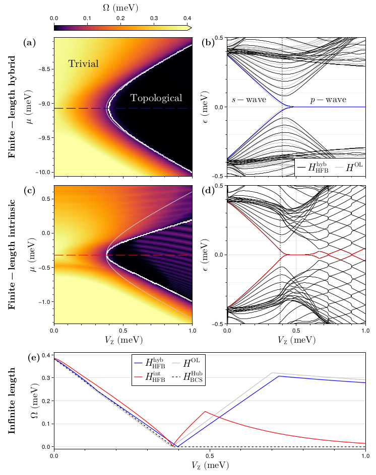
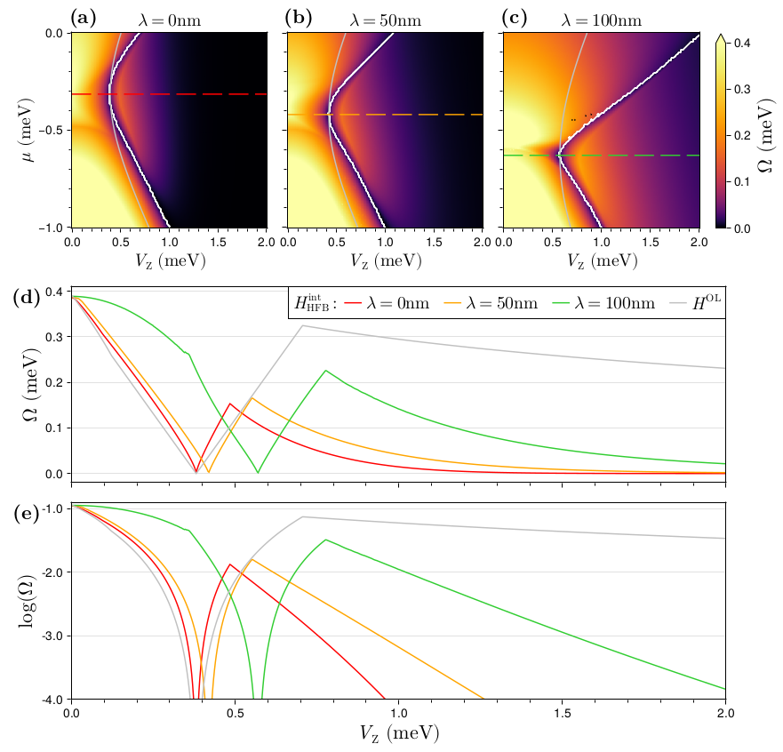
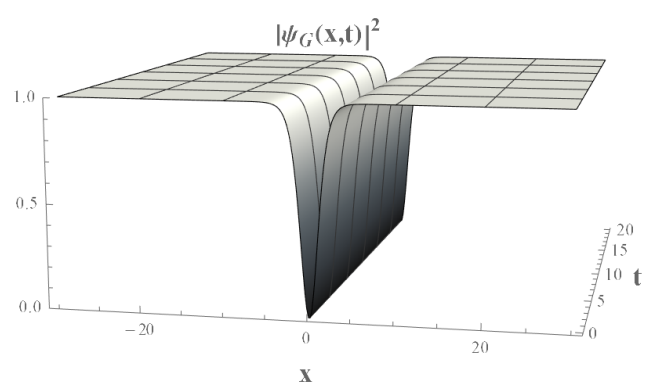
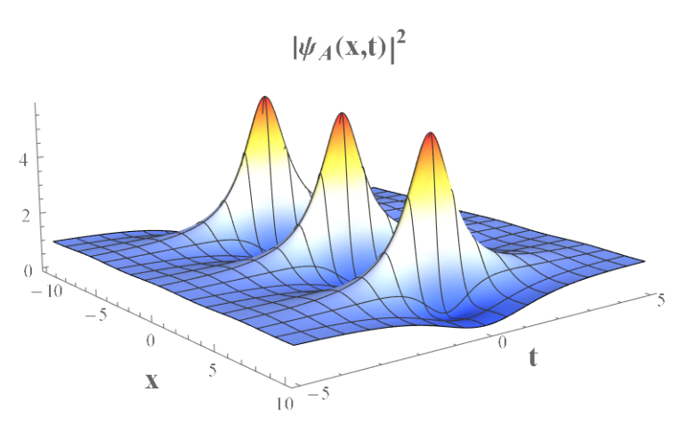
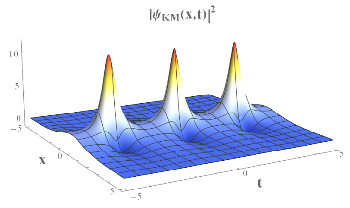
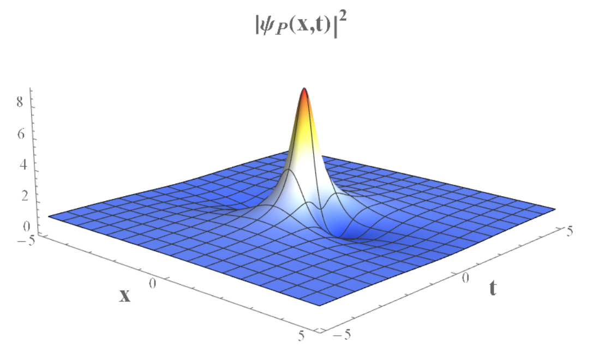
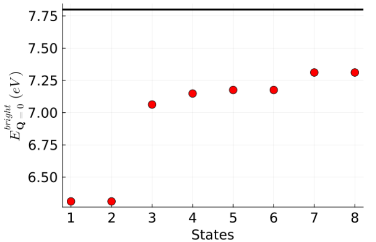
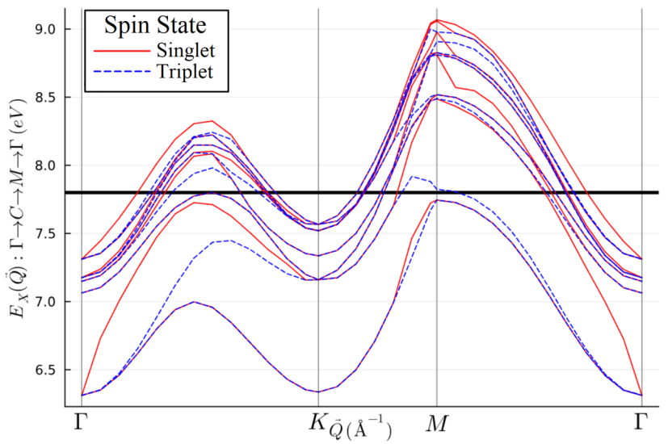
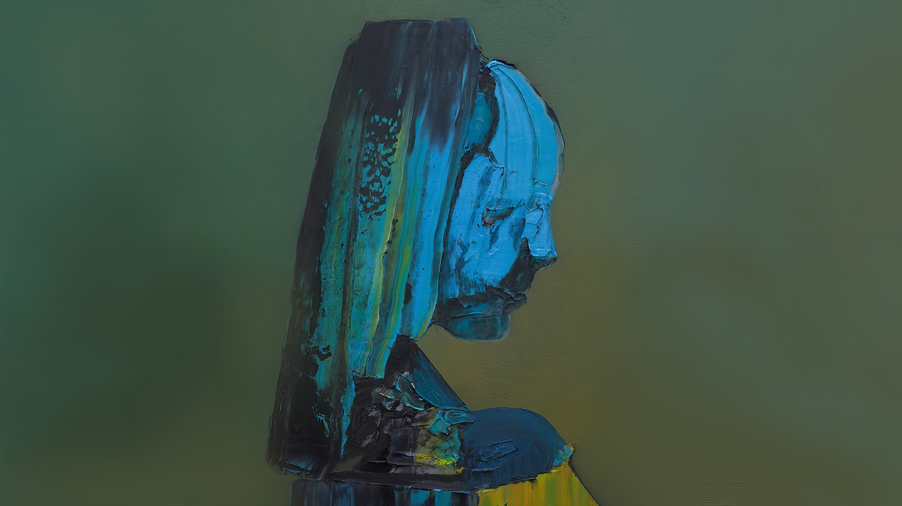
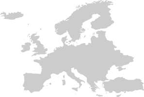

About me...
Greetings! My name is Francisco Lobo. I was born and raised in Guimarães, Portugal, but later moved to the Invicta city, Porto.
I obtained both my bachelor's and master's degree in Physics at the University of Minho in Braga, Portugal.
My master's thesis was done under the supervision of
Bruno Amorim and
Nuno Peres .
I'm currently a PhD student of the Quantum Dynamics of Materials (QUDYMA) team under
the supervision of Pablo SanJose ,
Elsa Prada and
Rui Silva at the
Material Science Institute of Madrid (ICMM-CSIC) .
I'm working within the field of many-body atosecond physics, devoted to understanding quantum materials and their response when driven out of equilibrium.
At the moment, I'm dealing with self-consistent Majorana physics in 1D nanowire systems.
Publications
My publications record started on my PhD first year whilst working in the Quantum Dynamics of Materials (QUDYMA) team at the Material Science Institute of Madrid (ICMM-CSIC) . From 2024 to now, under the supervision of Pablo SanJose and Elsa Prada , we mostly dealt with self-consistent superconductive physics.

Figure 2: (a) Topological phase diagram of the finite-length, self-consistent hybrid Majorana nanowire model as a func- tion of the chemical potential μ and the Zeeman field \( V_\text{Z} \) in the semiconductor. Color encodes the energy \( \Omega \) of the lowest-lying excitation at each point. The white line marks the topological transition in bulk, and the dashed line the transition in the Oreg-Lutchyn model. (b) Linecut of the low- energy spectrum (check paper for more)

Figure 3: Phase diagram of an infinite intrinsic nanowire with interactions of increasing range, governed by screening length \( \lambda \). The \( \lambda=0 \) case corresponds to onsite interactions of Fig. 2. The topological boundary becomes sharper at its \( V_\mathrm{Z}^c \) minimum as \( \lambda \) grows. (d,e) The gap along the horizontal cuts [dashed in (a-c)] becomes longer range, but are still exponen- tially decaying with \( V_\mathrm{Z} \), as shown by the log-plot (e). For comparison, the OL gap (dotted) decays much more slowly, as a power-law.
Exponential suppression of the topological gap in self-consistent intrinsic Majorana nanowires
Pablo SanJose
, Elsa Prada
cond-mat arXiv
Suplementary material:
Detailed appendix
Replicable code
Slide presentation
{kind=link}
Predictions of topological p-wave superconductivity and Majorana zero modes (MZMs) in hy-
brid superconductor-semiconductor nanowires have been difficult to realize experimentally. Conse-
quently, researchers are actively exploring alternative platforms for MZMs. In this work, we theoret-
ically study depleted nanowires with intrinsic superconductivity (as opposed to proximity-induced).
Using a self-consistent Hartree-Fock-Bogoliubov mean field theory, we compute the topological phase
diagram versus Zeeman field and filling for intrinsic wires with attractive interactions. We find that,
although intrinsic wires could be less vulnerable than hybrids to topology-adverse effects, such as
disorder and metallization, they are hindered by a fundamental limitation of their own. Although a
topological p-wave phase is indeed possible, it is far less robust than in hybrid Majorana nanowires.
Instead of remaining stable beyond the topological transition, it is found to decay exponentially
with Zeeman field, greatly reducing the parameter region with an appreciable topological gap.
Scholar Thesis
I want to express my gratitude towards Professor Bruno Amorim and Professor Nuno Peres. Both of them are, without a doubt, one of the best professors and mentors one could have. I thank them for their pedagogical, kind and friendly attitude and for the patience and support shown throughout the realization of the dissertation but also in the courses they taught me. I attribute much of my academic background, specifically in quantum and condensed matter physics, to them. I would also like to thank Professor Yuliy Bludov for all the comradery that really made me feel early on that I'm in the right place.

Figure 3(b): Spatio-temporal evolution of the amplitude of a dark soliton \( (\theta = 0) \) with \( \Omega = 1 \).

Figure 5(a): Spatio-temporal evolution of the squared amplitude of the Akhmediev breather with \( a = 0.25 \).

Figure 6(a): Spatio-temporal evolution of the squared amplitude solution of the Kuznetsov-Ma breather with \( a = 0.8 \).

Figure 7: Spatio-temporal evolution of the amplitude solution of the Peregrine soliton.
BSc in 2020 at UM:
Dark Solitons and Breathers as solutions
of the NonLinear Schrodinger Equation
Yuliy Bludov
This project deals with the nonlinear dynamics of solitons - localized
waves that maintain their shape due to balance between its natural diffraction and self-focusing (or self-defocusing) nonlinearity - and the nonlinear
dynamics of breathers - strongly localized solitonic structures that oscillate
periodically in either space, time or both. Firstly, we modulate the instability of a plane wave background in the presence of small perturbations and
show the appearance of two different medium, the focusing medium and the
defocusing medium. Secondly, we derive analytically from the NonLinear
Schr¨odinger Equation with cubic nonlinearity in a self-defocusing media the
spacial solutions of the dark and gray soliton. For last, we derive analytically, this time in a self-focusing medium, the Akhmediev breather solution
and show that by varying the interval of a parameter one can obtain the
Kuznetsov-Ma breather and the Peregrine soliton solutions.

Figure 13: hBN bright exciton energies (corresponding to the optically active singlet state with center of mass momentum \( Q=0 \) ) for the first eight excitonic states. The energy values read as: 6.31eV for the 1st and 2nd state, 7.06eV for the 3rd, 7.15eV for the 4th, 7.18eV for the 5th and 6th and 7.31eV for the 7th and 8th. The parameters utilized for these results are made explicit in the beginning of Sec.V.B.I. Also, the calculation were performed within the TDA.

Figure 17: hBN excitonic band structure for both the spin-singlet and spin-triplet states, for the first eight excitonic states. The dispersion goes along the symmetry path \( Q : \Gamma \rightarrow K \rightarrow M \rightarrow \Gamma \) for \( N_Q = 32 \) different excitonic center of mass momentum \( Q \). It was used a sampling of \( N_k = 8649 \) electronic k-points and a cutoff norm of \( k_\mathrm{cutoff} =1.5 Å\). (check paper for more)
MSc in 2022 at UM:
Excitonic properties of hBN
from a time-dependent
Hartree-Fock mean-field theory
Bruno Amorim
, Nuno Peres
Suplementary material:
Slide presentation
In this work we perform a generic derivation on how collective excitations emerge from a many-body system
of interacting particles within a time-dependent Hartree-Fock mean-field theory at zero-temperature. To
this end, we study the linear response of the system’s reduced density matrix in a many-body perturbation
theory and demonstrate that it can be expressed in terms of a generalized eigen-problem of the effective
two-particle Hamiltonian of the electron-hole interaction. We then specify this formalism for the case of a
crystal system and an atomistic electron-electron interaction, structuring the generalized eigen-problem in
terms of the Bloch momentum and spin degrees of freedom. At last, we apply this theory to the case of
hexagon boron nitride structures in a nearest-neighbor tight-binding model for the electronic Bloch states.
We then solve the generalized eigen-problem numerically and obtain the excitonic states energies and wavefunctions. Also, we comment on the role of screening in the Hartree and Fock interaction, on the numerical
details of the generalized eigen-problem and on the reliability of the Tamm-Dancoff approximation
Journal notes
Compilation of personal notes on various topics in Condensed Matter Physics, mostly useful for my own research or just for my entertainment.
All of this notes are a work in progress as they are being passively kept up and updated with new topics.
They may be useful to others but please be aware that it isn't peer-reviewed and will most certainly contain (a lot of) errors.
If you find those please contact me, I would very much appreciate it.

{kind=link}
A compilation of notes on various topics in condensed matter physics,
primarily focused on superconductivity, encountered during the course of my research.
These notes are predominantly based on Michael Tinkham's book, Introduction to Superconductivity ,
and Anton Akhmerov's online course, Tying Quantum Knots.
Last updated: -
Conferences and talks
